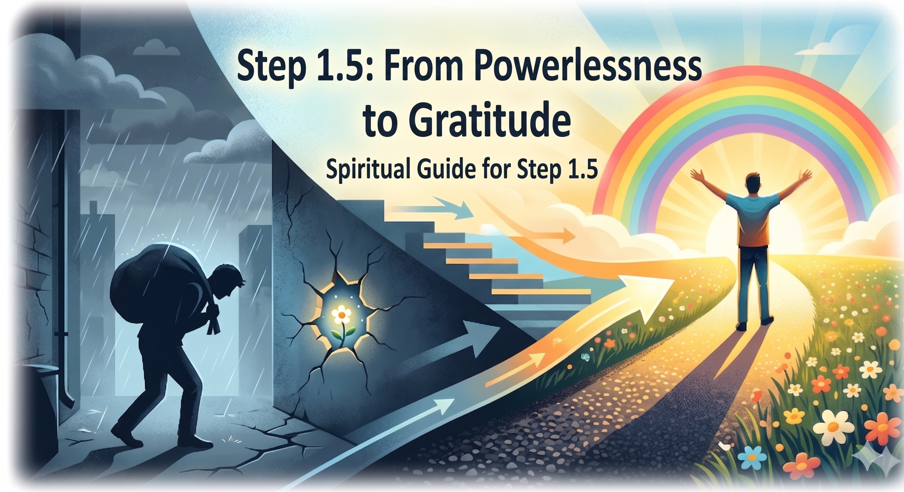

The bot will guide you step by step through a gentle writing exercise that takes us from difficulty to hope. To avoid feeling overwhelmed, we work on one thing at a time:
Simply click the bot link below and send it the following message: "Hi, I want to start working on 1.5 step."